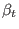
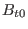
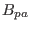
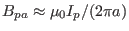
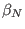

Efficiency of tokamak magnetic field in confining plasma: Plasma
beta
To characterize the efficiency of the magnetic field of tokamaks in confining
plasmas, introduce the plasma  , which is defined as the ratio of the
thermal pressure to the magnetic pressure, i.e.,
, which is defined as the ratio of the
thermal pressure to the magnetic pressure, i.e.,
Since the pressure in tokamak plasmas is inhomogeneous, the volume averaged
pressure is usually used to define the beta. In tokamak plasmas, the toroidal
beta  and the poloidal beta  are defined, respectively, by
are defined, respectively, by
where
is the volume averaging,  is the
vacuum toroidal magnetic field at the magnetic axis (or geometrical center of
the plasma),  is the averaged poloidal magnetic field on the plasma
surface. In tokamaks, the toroidal magnetic field is dominant and thus the the
toroidal beta (not ) is the usual way to characterize the
the efficiency of the magnetic field in confining plasmas. Why do we need
? The short answer is that characterizes the efficiency of
the plasma current in confining the plasma. This can be seen by using Ampere's
law to approximately write the poloidal magnetic field as
. Then is written
which is the ratio of the pressure to the plasma current, and thus
characterizes the efficiency of the plasma current in confining the plasma.
Furthermore is closely related to the normalized beta 
introduced in the next subsection (refer to Eq. (92)). In
addition, is proportional to an important current, the so-called
bootstrap current, in tokamak plasmas. I will discuss this later.
yj
2018-03-09